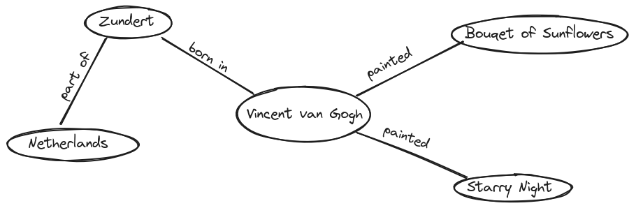
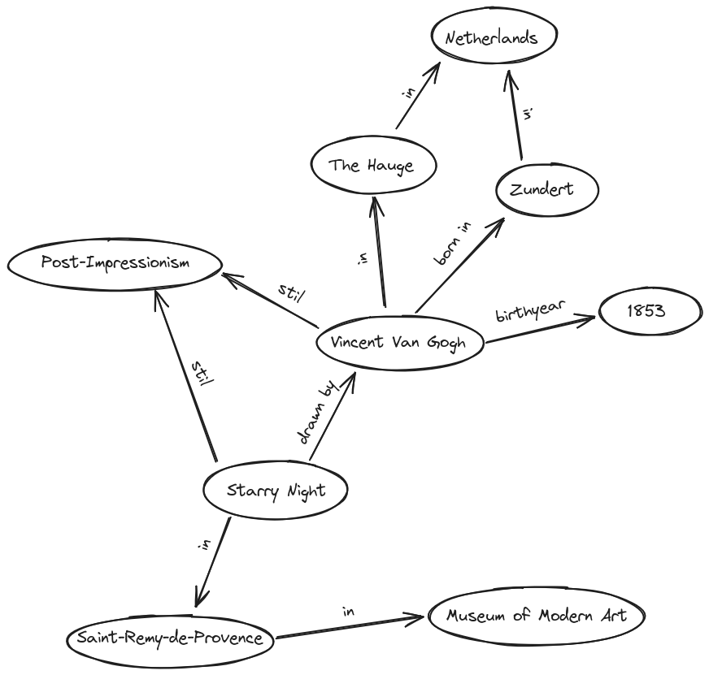
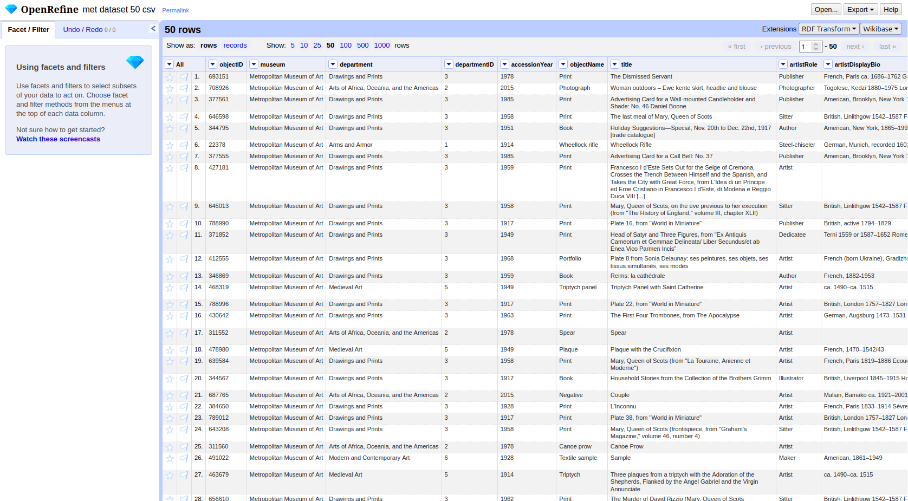
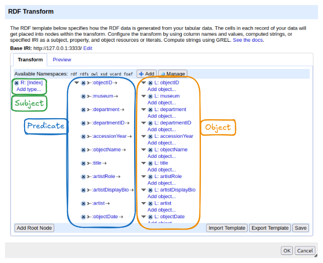
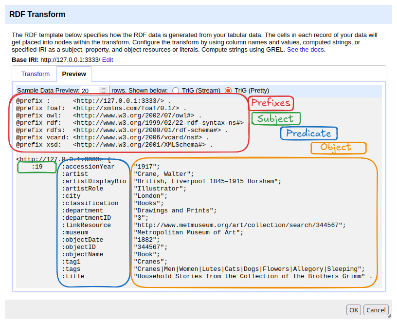

All in One View
Content from Introduction to Linked Open Data in the Humanities
Last updated on 2026-08-13 | Edit this page
Overview
Questions
- What is Linked Open Data, and how does it differ from other data models?
- How can the subject-predicate-object model be used to describe LOD?
- What are real-world examples of Linked Open Data in the humanities?
Objectives
- Explain the concept of Linked Open Data (LOD) in your own words.
- Distinguish between “Linked Data” and “Linked Open Data”.
- Represent simple relationships using the subject-predicate-object model.
Introduction
In this lesson, we want to explore the fundamentals of Linked Open Data (LOD). What is it, and why is it important? To answer these questions, we will break the term down step by step. The first and most fundamental concept we need to understand is: What type of data are we dealing with? In what form does data exist when we talk about LOD? To do this, first we want to look at the terms linked, open, and data, to understand what we are talking about in the first place.
Discussion: What is data?
When we talk about data, many people often understand different things about it, and no-one can quite put their finger on what it actually means. Try to approach this term and find out what it could mean.
It is not easy to find a universal definition of data, but a useful starting point is: data is information about the real world that has been observed and recorded. Think of it like a photograph. A photo captures a moment in time, but it can never show everything: the smell in the air, the sounds in the background, or what happened the moment before. Data works the same way.
In the humanities, data can take many forms:
- A letter written by a historical figure is data. It records words, a date, a sender, and a recipient.
- An archaeological object, such as a Roman coin, is data. It records material, size, imagery, and findspot.
- A painting like the Starry Night is data. It records a creative act at a specific time and place.
In the natural sciences, data is often a number: the temperature on a given day or the weight of a sample. What all of these have in common is that they try to represent a portion of the real world.
This also means that data is always incomplete and selective. It is impossible to capture everything about a Roman coin just by noting its diameter. Someone, a researcher, a curator, a museum, has to decide which properties are worth recording and which are not. These decisions are always tied to a specific purpose and perspective, and they shape what the data can and cannot tell us.
In our digital age, much of this data exists or is being transferred into digital form. This makes it easier to store, share, and analyse, but it also intensifies these challenges: what we digitise, and how we digitise it, determines what future researchers will be able to find and understand.
Now that we understand what data is, we want to look at how it can be captured and digitised, which is why we will look at the L from LOD next.
Discussion: What requirements should data fulfil?
Thinking about the examples above: what would you need to know about a letter, a coin, or a painting to make it truly useful for someone else’s research, not just your own?
Discussion: What data modelling options do you know?
Have you already worked with structured data? What did that structure look like, and what did it make easy or hard to do?
Imagine you are a researcher studying Vincent van Gogh and want to build a collection of information about him. You could gather details about his paintings, his friends, the places he visited, and much more. Probably the most common way would be to store this information in a table. This has various advantages, but also disadvantages. As with the collection of data and writing it down, there is no clear answer as to which type of modelling is correct, it remains individual and above all depends on the project. If you want to combine your own data with other data, such as information about Van Gogh’s home town or his circle of acquaintances, it becomes difficult to visualise this in a table. The question is now, how we structure our knowledge in a way, that is easy to share, connect, and expand?
Structuring Knowledge: The Subject-Predicate-Object Model
Given the following Information about Vincent Van Gogh: He was born in Zundert and has drawn the painting Starry Night
One way to structure and link knowledge is to break it down into simple relationships using the subject-predicate-object model. This model is a fundamental method for structured data representation:
The subject-predicate-object model
Subject: The entity being described.
Predicate: The relationship or attribute.
Object: The value or linked entity.
For example, if we want to express that Vincent van Gogh painted Starry Night, we can structure it like this:
| Subject | Predicate | Object |
|---|---|---|
| Bouquet of Sunflowers | was painted by | Vincent van Gogh |
By structuring information in this way, we ensure that the knowledge we store—namely, that Vincent van Gogh painted this artwork—is precise and easy to understand. We reduce the sentence to the essential elements, making it easier to store and process.
Now, if we wanted to store additional paintings by Vincent van Gogh, we could use the same format. Adding another painting to the table would look like this:
| Subject | Predicate | Object |
|---|---|---|
| Bouquet of Sunflowers | was painted by | Vincent van Gogh |
| Starry Night | was painted by | Vincent van Gogh |
However, at this point, our data is still in a tabular format, which is not the format used in LOD.
Triples Visualized
To visualize how Linked Open Data works, imagine a mind map. Write Vincent van Gogh in the center of a page and draw lines to various related terms:
One line connects Bouquet of Sunflowers with the label was painted by.
Another line connects Zundert (his birthplace) with the label was born in.
A third line connects Zundert with Netherlands with the label is part of.
Each of these connections expands the knowledge network—a simple version of what we call the LOD cloud. The more connections we create, the richer and more meaningful our dataset becomes. The resulting mind map would look like this:

By visualizing the data, it becomes easier to see why this way of storing and structuring knowledge is so efficient and valuable. Imagine a much larger mind map with significantly more information. This could reveal connections between people that were previously invisible. Furthermore, if researchers from different locations collaborate on such a mind map, additional insights and knowledge can be discovered. In a very theoretical and ideal scenario it would be possible to draw a mindmap with every information in the world to find a connection from you to Bill Gates.
In essence, we are working with graphs, more specifically, directed graphs that follow a particular reading direction. Each connection has a clear subject, predicate, and object, forming what’s known as a triple.
Exercise: Create a Graph
Look at one of the following texts and try to visualise the information from it in a mind map. Pay attention to decisions that need to be made and possible problems that may arise. To draw the mind map you can use whatever you want. One possibility is Excalidraw , an open source tool with which you can also work in a group Go into breakout rooms and create a graph. Try to find connections you could model in that graph.
Group 1: Vincent van Gogh was born in Zundert, the Netherlands, in 1853 and is a Post-Impressionist artist. In his youth, he developed a strong interest in art and initially studied in The Hague. He later moved to Paris, where he gained his first insights into modern art.
Group 2: Van Gogh created numerous famous paintings. The masterpiece ‘Starry Night’ was created in Saint-Remy-de-Provence and belongs to the Post-Impressionist era. The painting can be found in the Museum of Modern Art in Manhattan.
One way to visualize both texts in one graph is the following. If your solution looks different, this does not necessarily mean that it is wrong. It is, as always in data modelling, individual and decision based.

Content from The concept of IRIs
Last updated on 2026-08-13 | Edit this page
Overview
Questions
- How do IRIs eliminate ambiguity when different datasets use similar titles?
- What are the essential components of a IRI, and how do they work together to ensure uniqueness?
- Why are namespaces crucial for maintaining clarity and consistency in linked data?
Objectives
- Explain what IRIs are
- Explain why they are important in Linked Open Data.
- Explain the structure of a IRI
- Explain what namespaces are
Ambiguity
Now that the fundamental concept behind the subject-predicate-object model is understood, a problem arises when trying to connect your own data with external datasets or when modeling knowledge unambiguously: How can we ensure that we are talking about the same objects?
Consider the following example:
Suppose you are researching in the database from the Metropolitan Museum of Art for Van Gogh’s painting Wheat Field with Cypresses. Now, if you would like to talk about the different paintings, it could become difficult and confusing which painting you want to talk about exactly, because you find:
An entry titled Wheatfield with Cypresses, attributed to Vincent van Gogh, painted in 1889.
Another entry titled Cypresses, also attributed to Vincent van Gogh, from 1889.
Another entry titled Wheat Field, also by Vincent van Gogh from 1888.
Yet another entry with the same title Wheat Field, but by Jean Jacques de Boissieu from 1772.
This highlights that names are often not unique. While additional details like year and artist usually clarify which object is meant, this is not always guaranteed. Humans can often resolve such ambiguities using context, but computers struggle with this.
Since a subject-predicate-object model does not have the context of a larger text, ambiguity can be resolved using IDs. Museums, for instance, assign unique IDs to paintings, ensuring that even those with identical names are distinguishable. This concept is adapted and expanded for LOD to work in an open, large-scale environment.
Now, with these IDs, it becomes possible to refer to one exact painting and be sure that everyone within the same context understands which artwork is meant. However, when we are only talking about an ID, a number, it is conceivable that in another context the same number might refer to a different object, meaning that the number alone is not free from ambiguity, so we need to find a way to resolve to that exact “context”.
From IDs to URIs
To resolve this problem, we can use a URI, a Uniform Resource Identifier. The key idea is to combine a unique ID with a namespace and together they form a globally unique address.
Think of it like a postal address. If someone tells you “the house is number 42”, that is not very helpful, there are thousands of houses numbered 42 in the world. But “42 Baker Street, London” is unambiguous. The house number is the ID, and the street and city together form the namespace: they provide the context that makes the number meaningful.
Back to our example: the Metropolitan Museum of Art assigns the
internal ID 436535 to Wheatfield with Cypresses.
Another museum might use the very same number for a completely different
object. But by combining that ID with the name of the institution as the
namespace, the combination
Metropolitan Museum of Art / 436535 is already unambiguous.
The namespace is therefore not just a technical prefix, it is a
declaration of context: ”this ID belongs to this institution, and
has a defined meaning there”.
In Linked Open Data, this principle is taken a step further: namespaces are defined as addresses on the internet, so that every resource can be looked up and referenced globally by anyone. This turns a namespace-and-ID combination into a URI (Uniform Resource Identifier), a unique, web-resolvable address. IRIs (Internationalized Resource Identifiers) extend this further by also supporting non-Latin scripts such as Arabic, Chinese, or Japanese.
URI and IRI in a nutshell
A URI is a unique, web-resolvable address for an object, made up of two parts:
- The namespace gives the context, a web address identifying the institution or system that manages the data
- The ID identifies the specific object within that context
Together: namespace + ID = URI, a globally
unique address that anyone can look up.
An IRI works exactly the same way, but also supports non-Latin characters.
Understanding IRIs
Applied to the painting Wheatfield with Cypresses, the Metropolitan Museum of Art does not provide a guaranteed way to reference this so-called resource unambiguously. While we can use the link to the museum’s website, there is no guarantee that this link will remain unchanged over time. If the URL were to change, our reference would no longer work.
To avoid this problem, certain providers offer ways to generate IRIs. One example we want to examine is Wikidata, the structured data repository behind Wikipedia. If we search for Wheatfield with Cypresses on Wikidata, we also find multiple entries. Looking at this entry, we can already see the associated ID in the page title. The link to the page _https://www.wikidata.org/wiki/Q26221215_ forms the IRI. The first part, _https://www.wikidata.org/wiki/_, is the namespace, which is predefined, while the second part, Q26221215, is the ID, which is uniquely referable within this namespace. The combination of both elements ensures that this object can be referenced unambiguously in different contexts. Like subjects, predicates need to get a IRI aswell, which describes what the predicate means exactly. Wikidata also provides some properties in their List of Properties. For example we can find an IRI for the property place of birth.
Exercise
One Entity, Two IRIs
In LOD, the goal is to identify every resource unambiguously. But what happens when different systems each assign their own IRI to the same entity?
- Open Wikidata and find the entry for Vincent van Gogh. Note down his IRI.
- Now open VIAF (Virtual International Authority File) and search for Vincent van Gogh. Note down his IRI there as well.
- Identify the namespace and the ID in each IRI.
- You now have two different IRIs for the same person. Does this contradict the LOD principle of unambiguous identification? Look carefully at the Wikidata entry for Van Gogh. Can you find anything that addresses this problem?
Wikidata IRI:
https://www.wikidata.org/wiki/Q5582 Namespace:
https://www.wikidata.org/wiki/ — ID: Q5582
VIAF IRI: https://viaf.org/viaf/9854560
Namespace: https://viaf.org/viaf/ — ID:
9854560
Both IRIs are internally unambiguous. Within their own system, each
points to exactly one entity. The apparent contradiction is resolved by
the fact that LOD systems can explicitly declare that two IRIs refer to
the same thing. In the Wikidata entry for Van Gogh, you can find the
property VIAF ID with the value 9854560 ,
a direct link to the VIAF record. The two systems are already
connected.
This is a fundamental pattern in LOD: rather than forcing a single global ID on every entity, different institutions maintain their own IRIs and link them to each other. How exactly this linking works will be covered in a later chapter.
Conclusion
URIs and IRIs form the bedrock of Linked Open Data by ensuring that every digital resource, such as Van Gogh’s Wheatfield with Cypresses, has a unique, reliable address. By breaking down the structure of these identifiers and understanding the role of namespaces, we see how ambiguity is resolved. This system not only enhances clarity but also fosters global collaboration and deeper insights in research.
- IRIs (Internationalized Resource Identifiers) are used to prevent ambiguities when identifying resources.
- An IRI needs to be defined and resolvable on the web.
- Subjects, predicates, and non-literal objects are identified with IRIs.
- An IRI is created from a namespace in combination with an ID.
Content from Introduction to RDF and Basic Modeling
Last updated on 2026-05-26 | Edit this page
Overview
Questions
- Why does LOD need a standard format like RDF?
- How does RDF structure information?
- What are blank nodes and literals?
- What are the limitations of N-Triples?
Objectives
- Explain the purpose of RDF and why standardization matters in LOD.
- Construct basic RDF triples in N-Triples format.
- Distinguish between IRIs, blank nodes, and literals, and know when to use each.
From the concept to RDF
In the previous chapters, we established two fundamental building blocks of Linked Open Data:
- The subject-predicate-object model as a way to break knowledge down into simple, structured statements.
- IRIs as a way to identify every resource and property unambiguously across the web.
We are now ready to combine these two ideas into a concrete, machine-readable format. But consider the following: imagine researchers in Tokyo, Cairo, and Berlin all model information about Vincent van Gogh using the subject-predicate-object structure, but each in their own way, with their own notation and their own rules for writing things down. Even if they all use IRIs, a computer cannot reliably process and combine their data if the formatting is inconsistent.
This is why we need not just a model, but a standard. A shared grammar that everyone follows, so that data from different sources can be read, understood, and connected by machines without human interpretation in between.
That standard is RDF (Resource Description Framework)** , a W3C standard for representing and exchanging knowledge on the web. It does not introduce new concepts, it takes the subject-predicate-object model and the use of IRIs that we already know, and defines precise, universally agreed rules for how to write them down.
Think of it like the rules of written language. Two people might know the same words, but without shared grammar and spelling conventions, written communication becomes unreliable. RDF is the grammar of Linked Open Data: it ensures that a triple written by a museum in Amsterdam means the same thing when read by someone in São Paulo.
By following RDF, datasets from entirely different institutions and domains can be linked together and queried as if they were one. At its core, every piece of information in RDF is expressed as a triple.
The RDF Triple
| Part | Role | Allowed values |
|---|---|---|
| Subject | The resource being described | IRI or blank node |
| Predicate | The relationship or property | IRI only |
| Object | The value or related resource | IRI, blank node, or literal |
The predicate is always an IRI. Relationships must be defined and unambiguous. The object can also be a concrete value (a literal) or a blank node, which we will look at below.
Writing RDF: N-Triples
To write RDF data in a concrete, machine-readable way, we need a defined notation. The one we will use in this chapter is N-Triples.
In N-Triples, the rules are minimal:
Rules for writing N-Triples
- Write each triple on its own line
- Wrap every IRI in angle brackets:
< > - End every statement with a period:
. - Separate subject, predicate, and object with whitespace
Let us build a triple step by step. We want to express: Wheatfield with Cypresses was created by Vincent van Gogh.
Step 1 — Identify subject, predicate, and object:
| Subject | Predicate | Object |
|---|---|---|
| Wheatfield with Cypresses | was created by | Vincent van Gogh |
Step 2 — Replace each element with its Wikidata IRI:
| Subject | Predicate | Object |
|---|---|---|
https://www.wikidata.org/wiki/Q26221215 |
https://www.wikidata.org/wiki/Property:P170 |
https://www.wikidata.org/wiki/Q5582 |
Step 3 — Write it as an N-Triple:
<https://www.wikidata.org/wiki/Q26221215> <https://www.wikidata.org/wiki/Property:P170> <https://www.wikidata.org/wiki/Q5582>.A single triple is just one statement. In practice, many triples together form a graph, a network of connected resources. Recall the mind map from chapter 1: each arrow with two nodes was one triple. Written in N-Triples, the same information looks like this:
<https://www.wikidata.org/wiki/Q26221215> <https://www.wikidata.org/wiki/Property:P170> <https://www.wikidata.org/wiki/Q5582>.
<https://www.wikidata.org/wiki/Q5582> <https://www.wikidata.org/wiki/Property:P19> <https://www.wikidata.org/wiki/Q9883>.
<https://www.wikidata.org/wiki/Q9883> <https://www.wikidata.org/wiki/Property:P17> <https://www.wikidata.org/wiki/Q55>.These three triples state that:
-
Wheatfield with Cypresses (
Q26221215) was created by Vincent van Gogh (Q5582). - Vincent van Gogh (
Q5582) was born in Zundert (Q9883). - Zundert (
Q9883) is located in the Netherlands (Q55).
Notice that Q5582 appears as both the object of the
first triple and the subject of the second. This is how the graph
connects: the same IRI in different positions links the triples
together, creating a chain of related statements, exactly like the
arrows in the mind map.
Not Everything Is an IRI: Blank Nodes and Literals
So far, every part of our triples has been identified by an IRI. In practice, two other types of values appear in RDF: blank nodes and literals.
Blank Nodes
A blank node is a resource without a globally unique identifier. It is used when an entity is relevant within the local dataset but does not need to be referenced from the outside world.
Imagine a painting in a museum’s collection where the artist is unknown. We still want to record that there was a creator, we just cannot identify them. A blank node acts as an anonymous placeholder:
<https://www.wikidata.org/wiki/Q26221215> <https://www.wikidata.org/wiki/Property:P170> _:unknownArtist.The prefix _: marks a blank node. The name after it
(unknownArtist) is only meaningful within this file, it has
no global significance and cannot be referenced from other datasets.
Within the same dataset, however, the same blank node identifier can
appear in multiple triples to make several statements about the same
anonymous entity. For example, if we also know that this unknown artist
was French, we can write:
<https://www.wikidata.org/wiki/Q26221215> <https://www.wikidata.org/wiki/Property:P170> _:unknownArtist.
_:unknownArtist <https://www.wikidata.org/wiki/Property:P27> <https://www.wikidata.org/wiki/Q142>.Both triples refer to the same unnamed person, connected by the shared blank node identifier.
Literals
A literal is a concrete value: a piece of text, a number, or a date. Unlike IRIs, literals do not point to a resource, they express a value directly.
For example, to record the creation year of Wheatfield with Cypresses or it’s title:
<https://www.wikidata.org/wiki/Q26221215> <https://www.wikidata.org/wiki/Property:P571> "1889"^^<http://www.w3.org/2001/XMLSchema#gYear>.
<https://www.wikidata.org/wiki/Q26221215> <https://www.wikidata.org/wiki/Property:P1476> "Wheatfield with Cypresses".The value "1889" is the literal. The part after
^^ is a datatype IRI.
Entities have no inherent properties
An entity in RDF is, at its core, nothing more than an IRI, a bare
identifier. https://www.wikidata.org/wiki/Q5582 does not
“contain” the name Vincent van Gogh. It has no label, no birth
year, no nationality built in. All of this information is added through
triples, including the name itself:
<https://www.wikidata.org/wiki/Q5582> <https://www.wikidata.org/wiki/Property:P1476> "Vincent van Gogh"@en.This is one of the central ideas of RDF: an entity is defined entirely by the statements made about it. The more triples you add, the richer the description becomes, but without any triples, an IRI is just an address pointing on an empty thing.
A computer, on its own, cannot know what "1889" means.
Is it a year? A house number? A product code? The characters
1, 8, 8, 9 are just
a sequence of digits. The datatype IRI resolves this ambiguity: it tells
the computer precisely how to interpret the value.
xsd:gYear means “this is a calendar year”, which allows the
computer to sort or compare it correctly. For instance, it now knows
that 1889 comes before 1900, or that it falls within the 19th century.
Without the datatype, the computer would treat "1889" as
plain text and could not do any of that.
The datatype IRIs come from a standardised vocabulary defining these.
Common examples are xsd:integer for whole numbers,
xsd:date for full dates like "1853-03-30", and
xsd:string for plain text.
Plain text literals can omit the datatype.
"Wheatfield with Cypresses" without any ^^ is
valid and implicitly treated as plain text. They can also carry a
language tag to specify which language they are written
in:
<https://www.wikidata.org/wiki/Q26221215> <https://www.wikidata.org/wiki/Property:P1476> "Wheatfield with Cypresses"@en.Here, no explicit ^^ datatype is needed. The language
tag @en already tells the computer everything it needs to
know about how to interpret the value: it is a piece of text in English.
Language tag and datatype IRI cannot be combined on the same literal;
they are two alternative ways of describing a value.
The three types of values in RDF
| Type | When to use | Syntax example |
|---|---|---|
| IRI | The resource has a global, persistent identifier | <https://www.wikidata.org/wiki/Q5582> |
| Blank node | The resource exists but has no global ID | _:unknownArtist |
| Literal | The value is text, a number, or a date | "1889"^^<http://www.w3.org/2001/XMLSchema#gYear> |
Limitations of N-Triples
N-Triples is simple, strict, and easy to parse, but writing larger datasets in this format quickly becomes impractical. Every triple must repeat the full IRI of the subject, even when many consecutive triples describe the same resource. Consider these three statements about the same painting:
<https://www.wikidata.org/wiki/Q26221215> <https://www.wikidata.org/wiki/Property:P170> <https://www.wikidata.org/wiki/Q5582>.
<https://www.wikidata.org/wiki/Q26221215> <https://www.wikidata.org/wiki/Property:P571> "1889"^^<http://www.w3.org/2001/XMLSchema#gYear>.
<https://www.wikidata.org/wiki/Q26221215> <https://www.wikidata.org/wiki/Property:P1476> "Wheatfield with Cypresses"@en.The IRI https://www.wikidata.org/wiki/Q26221215 appears
three times, once per triple. In a real dataset with hundreds or
thousands of triples, this repetition makes files long, hard to read,
and error-prone. How this problem is addressed in practice is the
subject of the next chapter.
Exercise: From Mind Map to N-Triples
In the first chapter, you created a mind map from one of the following two texts. Now take the connections you modelled there and express them as N-Triples. For each arrow in your mind map, write one triple. Use Wikidata for all IRIs. For any entity not listed in the table below, look it up yourself on Wikidata. Try to include at least one literal (a year or a date).
Group 1: Vincent van Gogh was born in Zundert, the Netherlands, in 1853 and is a Post-Impressionist artist. In his youth, he developed a strong interest in art and initially studied in The Hague. He later moved to Paris, where he gained his first insights into modern art.
Group 2: Van Gogh created numerous famous paintings. The masterpiece ‘Starry Night’ was created in Saint-Remy-de-Provence and belongs to the Post-Impressionist era. The painting can be found in the Museum of Modern Art in Manhattan.
| Entity | Wikidata ID |
|---|---|
| Vincent van Gogh | Q5582 |
| Zundert | Q9883 |
| Netherlands | Q55 |
| Paris | Q90 |
| Starry Night | Q45585 |
| Museum of Modern Art | Q188740 |
| Property | Wikidata ID |
|---|---|
| place of birth | P19 |
| country | P17 |
| creator | P170 |
| located in | P276 |
| inception | P571 |
| date of birth | P569 |
There is no single correct answer, your solution depends on which connections you modelled in your mind map. The following are examples of valid triples for each group.
Group 1
<https://www.wikidata.org/wiki/Q5582> <https://www.wikidata.org/wiki/Property:P19> <https://www.wikidata.org/wiki/Q9883>.
<https://www.wikidata.org/wiki/Q9883> <https://www.wikidata.org/wiki/Property:P17> <https://www.wikidata.org/wiki/Q55>.
<https://www.wikidata.org/wiki/Q5582> <https://www.wikidata.org/wiki/Property:P569> "1853"^^<http://www.w3.org/2001/XMLSchema#gYear>.Group 2
<https://www.wikidata.org/wiki/Q45585> <https://www.wikidata.org/wiki/Property:P170> <https://www.wikidata.org/wiki/Q5582>.
<https://www.wikidata.org/wiki/Q45585> <https://www.wikidata.org/wiki/Property:P276> <https://www.wikidata.org/wiki/Q188740>.- RDF is a W3C standard that gives a precise, shared format to the subject-predicate-object model.
- In RDF, every statement is a triple: subject, predicate, object.
- N-Triples is a notation for RDF: one triple per line, IRIs in angle brackets, statements ending with a period.
- The object of a triple can be an IRI (a resource), a blank node (an anonymous entity), or a literal (a concrete value like a date or string).
Content from Serialization
Last updated on 2026-08-13 | Edit this page
Overview
Questions
- How can RDF graphs be written down in files?
- What are serialization formats?
- What is Turtle?
- What are namespaces and prefixes?
Objectives
- Explain the purpose of serialization formats
- Identify common serialization formats
- Read and write RDF in Turtle syntax
- Explain the purpose of namespaces and prefixes
- Identify namespaces and prefixes in a RDF file
Serialization Formats
So far, we have represented RDF as graphs. To store and exchange this information, the graph must be written down in a machine-readable text format. This process is called serialization. A serialization format defines how RDF triples are written in a text file so that computers can read and process them.
One serialization format we have already seen is
N-Triples. Files written in this format usually use the
file extension .nt. Another common serialization format is
Turtle (Terse RDF Triple Language). Turtle is designed
to be more compact and easier for humans to read and write than
N-Triples. It reduces repetition by grouping multiple triples with the
same subject (or same subject and predicate) and is easier to read by
indentation. Turtle files use the file extension .ttl.
Basic Turtle Rules
- Each triple ends with a period
.( subject predicate object .) - A semicolon
;continues the same subject (subject predicate object ; predicate object .) - A comma
,continues the same subject and predicate (subject predicate object , object .))
N-Triple:
# Vincent van Gogh created Starry Night and Wheatfield with Cypresses. He was born in Zundert.
<http://example.org/VincentVanGogh> <http://example.org/hasCreated> <http://example.org/StarryNight> .
<http://example.org/VincentVanGogh> <http://example.org/hasCreated> <http://example.org/WheatfieldwithCypresses>.
<http://example.org/VincentVanGogh> <http://example.org/wasBornIn> <http://example.org/Zundert> .Turtle:
# Vincent van Gogh created Starry Night and Wheatfield with Cypresses. He was born in Zundert.
<http://example.org/VincentVanGogh>
<http://example.org/hasCreated> <http://example.org/StarryNight>, <http://example.org/WheatfieldwithCypresses> ;
<http://example.org/wasBornIn> <http://example.org/Zundert> .
Each RDF serialization format has its own syntax and grammar rules. You can find the official specifications for (Turtle)[https://www.w3.org/TR/turtle/] and for (N-Triple)[https://www.w3.org/TR/n-triples/]. But in practice, you do not need to memorize all syntax rules: RDF editors and validators can help you.
Write RDF statements in Turtle
Below you will find several RDF statements written either as natural language sentences or in N-Triples format. Rewrite them in Turtle syntax using a text editor.
Claude Monet was born in Paris.
Claude Monet created Water Lilies.
Claude Monet created Woman with a Parasol.
Woman with a Parasol was created in year 1875.<http://example.org/ClaudeMonet>
<http://example.org/wasBornIn> <http://example.org/Paris> ;
<http://example.org/hasCreated> <http://example.org/WaterLilies>, <http://example.org/WomanwithaParasol> .
<http://example.org/WomanwithaParasol>
<http://example.org/hasCreationYear> "1875" .Other Serialization Formats
Other common serialization formats are RDF/XML and JSON-LD. Although these formats look different, they all represent the same RDF graph.
Example in JSON-LD and RDF/XML
JSON
// Vincent van Gogh created Starry Night and Wheatfield with Cypresses. He was born in Zundert.
{
"@id": "http://example.org/VincentVanGogh",
"http://example.org/hasCreated": [
{
"@id": "http://example.org/StarryNight"
},
{
"@id": "http://example.org/WheatfieldwithCypresses"
}
],
"http://example.org/wasBornIn": {
"@id": "http://example.org/Zundert"
}
}XML
<!-- Vincent van Gogh created Starry Night and Wheatfield with Cypresses. He was born in Zundert. -->
<rdf:Description rdf:about="http://example.org/VincentVanGogh">
<hasCreated rdf:resource="http://example.org/StarryNight"/>
<hasCreated rdf:resource="http://example.org/WheatfieldwithCypresses"/>
<wasBornIn rdf:resource="http://example.org/Zundert"/>
</rdf:Description>All RDF serialization formats are plain text formats and can be opened with any text editor.
Each RDF serialization format has its own syntax and grammar rules. You can find the official specifications for (Turtle)[https://www.w3.org/TR/turtle/] and for (N-Triple)[https://www.w3.org/TR/n-triples/]. But in practice, you do not need to memorize all syntax rules: RDF editors and validators can help you.
Namespaces and Prefixes
Namespaces help make RDF data unambiguous and interoperable. As introduced in the previous episode, IRIs uniquely identify resources such as people, places, or concepts.
However, full IRIs can become very long and difficult to read when used repeatedly in an RDF file. To make RDF easier to write and understand, we can define a short abbreviation for a namespace. This abbreviation is called a prefix.
Namespaces and prefixes are declared at the beginning of a Turtle
file using the @prefix keyword:
@prefix wd: <https://www.wikidata.org/wiki/> .For example, the following triple written with full IRIs:
<https://www.wikidata.org/wiki/Q5582>
<https://www.wikidata.org/wiki/Property:P19>
<https://www.wikidata.org/wiki/Q9883> .can be written more compactly using prefixes. In this case the enclosing characters ‘<’ and ‘>’ around the IRIs are omitted.
@prefix wd: <https://www.wikidata.org/wiki/> .
wd:Q5582 wd:Property:P19 wd:Q9883 .Find the mistakes in the following Turtle file
The following Turtle file contains several syntax mistakes. Copy the code snippet into a text editor and try to identify and correct the errors.
1 @prefix wiki: <https://www.wikidata.org/wiki/> .
3 @prefix xsd: <http://www.w3.org/2001/XMLSchema#>
5 # Vincent van Gogh
6 wd:Q5582
7 ex:is ex:Artist ,
8 ex:hasName "Vincent van Gogh"^^xsd:string ;
9 ex:wasBornIn ex:Zundert ;
10 ex:wasBornInYear "1853"^^xsd:gYear ;
11 ex:hasArtMovement ex:PostImpressionism
12 ex:studiedIn ex:TheHague ;
13 ex:movedTo ex:Paris .
15 # Places
16 ex:Zundert
17 ex:isLocatedIn ex:Netherlands .
19 ex:TheHague
20 ex:isLocatedIn ex:Netherlands .
22 ex:Paris
23 ex:isLocatedIn ex:France ;
25 ex:SaintRemyDeProvence
26 ex:isLocatedIn ex:France .
28 ex:Manhattan
29 ex:isLocatedIn ex:USA .
31 # Artwork
32 wd:Q45585
33 ex:is ex:Painting ;
34 ex:hasName Starry Night^^xsd:string ;
35 ex:wasCreatedBy wd:Q5582 ;
36 ex:wasCreatedIn ex:SaintRemyDeProvence ;
37 ex:belongsTo ex:PostImpressionism ;
38 ex:isLocatedIn MuseumOfModernArt .
40 # Museum
41 ex:MuseumOfModernArt
42 ex:is ex:Museum ;
43 ex:isLocatedIn ex:Manhattan ;
44 ex:hasName "Museum of Modern Art"^^xsd:string .
46 # Art Movement
47 ex:PostImpressionism
48 ex:is ex:ArtMovement ;
49 ex:hasName "Post-Impressionism"^^xsd:string
There are 9 mistakes in the Turtle file:
- Missing prefix declaration:
@prefix ex: <http://example.org/> . - Wrong prefix name
wiki:should bewd: - Missing
.after the xsd: prefix declaration - Comma used instead of semicolon in line 7
- Missing semicolon in line 11
- Incorrect punctuation in line 23: ; should be .
- Missing quatation marks around “Starry Night” in line 34
- Missing prefix
ex:in line 38 - Missing final
.in line 49
You can validate the Turtle file using an online Turtle editor or validator, for example: (Turtle Web Editor)[https://felixlohmeier.github.io/turtle-web-editor/?utm_source=chatgpt.com]
The corrected Turtle file looks like this:
@prefix ex: <http://example.org/> .
@prefix wd: <https://www.wikidata.org/wiki/> .
@prefix xsd: <http://www.w3.org/2001/XMLSchema#> .
# Vincent van Gogh
wd:Q5582
ex:is ex:Artist ;
ex:hasName "Vincent van Gogh"^^xsd:string ;
ex:wasBornIn ex:Zundert ;
ex:wasBornInYear "1853"^^xsd:gYear ;
ex:hasArtMovement ex:PostImpressionism ;
ex:studiedIn ex:TheHague ;
ex:movedTo ex:Paris .
# Places
ex:Zundert
ex:isLocatedIn ex:Netherlands .
ex:TheHague
ex:isLocatedIn ex:Netherlands .
ex:Paris
ex:isLocatedIn ex:France .
ex:SaintRemyDeProvence
ex:isLocatedIn ex:France .
ex:Manhattan
ex:isLocatedIn ex:USA .
# Artwork
wd:Q45585
ex:is ex:Painting ;
ex:hasName "Starry Night"^^xsd:string ;
ex:wasCreatedBy wd:Q5582 ;
ex:wasCreatedIn ex:SaintRemyDeProvence ;
ex:belongsTo ex:PostImpressionism ;
ex:isLocatedIn ex:MuseumOfModernArt .
# Museum
ex:MuseumOfModernArt
ex:is ex:Museum ;
ex:isLocatedIn ex:Manhattan ;
ex:hasName "Museum of Modern Art"^^xsd:string .
# Art Movement
ex:PostImpressionism
ex:is ex:ArtMovement ;
ex:hasName "Post-Impressionism"^^xsd:string .
You do not need to memorize all RDF serialization formats. In practice, many tools can automatically convert between formats such as Turtle, RDF/XML, and JSON-LD.
Some useful online converters are: - EasyRDF Converter - RDF Converter by Zazuko
These tools are helpful for exploring different serialization formats and also validating RDF data.
- RDF graphs can be written in different serialization formats.
- Turtle is a compact and human-readable RDF serialization format.
- Turtle uses
.,;, and,to structure RDF triples. - Namespaces uniquely identify resources and properties.
- Prefixes shorten long IRIs and improve readability.
Content from Model with Ontologies and Vocabularies
Last updated on 2026-08-13 | Edit this page
Overview
Questions
- What steps you need to take to create an RDF data model from tabular data?
- What is the difference between a resource and a concept?
- What is RDF Schema used for and what does it include?
- What are vocabularies and ontologies used for?
- How to find vocabularies and ontologies?
- How to apply RDF Schema and vocabularies to create a RDF datamodel?
Objectives
- Identify entities and relationships in tabular data
- Distinguish between resources, concepts, and literals
- Explain the purpose of RDF Schema
- Apply classes and properties to RDF data
- Reuse existing vocabularies and ontologies
- Create a simple RDF data model from tabular data
Planning the Data Model
After exploring the basic concepts and syntax of Linked Open Data, we will now work with a tabular museum dataset containing information about artworks from the Metropolitan Museum of Art (the Met).
Before we can create an RDF dataset, we first need to understand the structure of the data and build a conceptual data model (decide how the underlying data model will look). Although the dataset is presented as a table, each row contains information about several different entities at once.
Our task is to identify these entities, the relationships between them as well as the attributes of the entities, and gradually transform the tabular data into a RDF data model.
| objectID | museum | department | departmentID | accessionYear | objectName | title | artistRole | artistDisplayBio | artist | objectDate | city | country | classification | linkResource | tags | tag1 |
|---|---|---|---|---|---|---|---|---|---|---|---|---|---|---|---|---|
| 693151 | Metropolitan Museum of Art | Drawings and Prints | 3 | 1978 | The Dismissed Servant | Publisher | French, Paris ca. 1686–1762 Grand Vaux | Surugue, Louis | ca. 1749 | Berlin | Prints | http://www.metmuseum.org/art/collection/search/693151 | Women|Servants | woman | ||
| 708926 | Metropolitan Museum of Art | Arts of Africa, Oceania, and the Americas | 2 | 2015 | Photograph | Woman outdoors – Ewe kente skirt, headtie and blouse | Photographer | Togolese, Kedzi 1880–1975 Lomé | Acolatse, Alex Agbaglo | 1975 | Lomé | Togo | Photographs | http://www.metmuseum.org/art/collection/search/708926 | Portraits|Women | Portraits |
Entities and Attibutes
Look at the dataset as a group, especially pay attention to the coloum headers.
Which different kinds of entities are described in the table? Which columns seem to describe the same entities?
The table contains information on three main entities. If we take the
coloum headers these could be: museum, artworks and artists. The museum
could include museum, department and
departmentID or department could be seen as an indepentant
entity; the artists includes artist artist bio
and artistrole; and the artworks include, for example,
objectid, classification, title
and tags.
However, there are also columns that cannot be clearly assigned. For
example, city and country may also refer to
the artist or the artwork or could be seen as independant entities,
whilst accession year only makes sense in relation to the
artwork and the museum, and artist role in relation to both
the artwork and the artist.
As always, modelling decisions are heavily influenced by interpretation.
We took the first step to identify the key entities in our dataset and started with distinguishing between entities and attributes, describing these.
TODO: Add description of attriubutes.
Create a Mind Map out of the Tabular Dataset
Work in small groups and choose one row from the dataset. Use Excalidraw (https://excalidraw.com/) or a sheet of paper to build a mind map step by step.
Think about what entities we identified earlier. Draw nodes for these entities and think about which table cell could represent them.
Cluster the informations in the other table cells around these.
How are the central nodes interconnected with the coloumn header? The column headers help you interpret the values. Use them to decide what the values represent.
Name the relationships between the central nodes by assigning labels to the connections. Pay attention to the direction of the arrows.
Tip: Do not try to model everything at once. Start by identifying the main entities, then gradually add more detail. ::: solution TODO: Add image of mindmap
Central nodes are the ones where the most other nodes cluster around. For example: objectID, artist, department or museum. Keep in mind – Modeling decisions are subjective.
The column headings provide context for the values in the table. For example, without the column header, an ObjectID would simply be a number. The column header tells us that the number refers to an artwork like
708926→ is aObjectIDin the context of our artwork. You can expand this process with the other coloumns as well: Similarly, the value “Photographer” in theartistrolecolumn only becomes meaningful when we know that it refers to the creator of the artwork. TheAcolatse, Alex Agbaglois thePhotoprapherof the artwork.Possible relationship labels include:
- Museum → owns → ObjectID
- Department → manages → ObjectID
- Artist → created → ObjectID
Create a Mind Map out of the Tabular Dataset (continued)
Other valid relationships may be possible depending on how the data is interpreted.
::::
Resources and Classes
The mind map already contains several interconnected nodes. We can now add another layer of meaning to the model.
The ObjectID does not simply represent a number. It refers to a specific artwork. Likewise, an artist name refers to a specific person.
In RDF, we call these identifiable things resources. Resources can also belong to broader categories.
ObjectID693151 rdf:type ArtworkThe artwork represented by ObjectID 693151 is an
individual resource, while Artwork represents a more
abstract concept the ressource belongs to, called a class.
This distinction between individual resources and classes is an important part of RDF modeling.
Think of rdf:type like a sticker or a name tag: it
doesn’t change the thing it’s stuck on, it just tells whoever looks at
it which drawer the thing belongs in. ObjectID693151 stays
exactly the artwork it was, but with a rdf:type Artwork
sticker on it, everyone (and every machine) reading our data instantly
knows: “ah, this one goes in the ‘Artwork’ drawer.”
rdf:type is not something we had to invent ourselves, it
already comes built into RDF, so every RDF tool understands it in
exactly the same way, everywhere. That is the whole benefit: instead of
everyone coming up with their own way of saying “this is a kind of
that”, there is exactly one standard sticker for it, and we can start
using it immediately.
What does this actually buy us? Once things are sorted into drawers like this, we can start asking useful questions of our data: “show me everything in the Artwork drawer”, or “show me everything in the Person drawer” - without writing any special code for it. The sorting itself already contains that information.
Not everything in our table refers to an identifiable thing, though. Values such as a date, a height in centimeters, or a free-text description are simply data values, there is nothing further we could point to or describe. In RDF, such values are called literals. A literal has no identity of its own; it is a plain piece of information attached to a resource, for example:
ObjectID693151 hasTitle "The Dismissed Servant"So when we look at the nodes in our data model, each one is one of the following:
- a resource - an identifiable thing (an artwork, an artist, a museum),
- a literal - a plain value (a date, a number, a string), or
- a class - a category that resources belong to (Artwork, Person, Museum).
Type your resources
Go back to the mind map you sketched earlier.
- Pick three or four nodes from your mind map that you would classify as resources.
- For each resource, write one simple triple that states which class
it belongs to, using
rdf:type. We have not reused any external vocabulary yet, so simply invent short placeholder terms of your own (e.g.ex:Artwork,ex:Person,ex:Museum). - Compare your triples with another group. Did you choose the same classes for the same kind of node?
Possible triples for our example object 693151:
ex:ObjectID693151 rdf:type ex:Artwork
ex:SurugueLouis rdf:type ex:Person
ex:MetMuseum rdf:type ex:Museum
ex:DrawingsAndPrints rdf:type ex:DepartmentDifferent groups may pick different class names or a different level
of detail (e.g. ex:Artist instead of
ex:Person). This is completely normal. Modelling always
involves choices and there is rarely a single correct answer.
RDF Schema
With rdf:type alone, we can already sort our resources
into drawers: an “Artwork” drawer, a “Person” drawer, a “Museum” drawer.
But nothing yet stops us from putting the wrong thing into the wrong
drawer. RDF itself would not complain if we accidentally wrote
ex:MetMuseum rdf:type ex:Person, a museum sorted into the
“Person” drawer. RDF has no way to say what may go into a drawer, or
what a drawer even means. That is the gap RDF Schema (RDFS) closes.
You can picture RDFS as the label and instruction sheet on each drawer: it doesn’t add any new artworks or people to our data, it explains what each drawer is for, what is allowed to go into it, and how the drawers relate to one another (for example, that the “Print” drawer sits inside the bigger “Artwork” drawer).
RDFS is, just like RDF, its own small vocabulary, it simply lives
under its own prefix, rdfs:. The official specification is
available at https://www.w3.org/TR/rdf11-schema/. It adds only a
handful of terms, and they do two jobs.
1. Naming and describing the drawers themselves
-
rdfs:Class- marks something as being a drawer (a class) at all, rather than an individual item.ex:Artwork rdf:type rdfs:Classsays: “ex:Artwork is a drawer you can sort things into.” -
rdfs:Resource- the biggest drawer of all; literally everything in RDF fits into it. -
rdfs:Literal- the drawer for plain values, like text, numbers, or dates.
2. Writing rules for our properties
-
rdfs:domain- “who is allowed to use this connector?” E.g.ex:createdBy rdfs:domain ex:Artworksays only things from the Artwork drawer may have a creator. -
rdfs:range- “what is allowed on the other end of this connector?” E.g.ex:createdBy rdfs:range ex:Personsays the creator must come from the Person drawer. -
rdfs:subClassOf- “this drawer sits inside a bigger drawer.” E.g.ex:Print rdfs:subClassOf ex:Artworkmeans everything in the Print drawer automatically also counts as being in the Artwork drawer. -
rdfs:label- a friendly, readable name for a technical term, e.g.ex:Artwork rdfs:label "Artwork".
What do we actually gain from this? Once we write
ex:createdBy rdfs:domain ex:Artwork and
rdfs:range ex:Person, a tool reading our data can
automatically check whether it still makes sense. For example, flagging
it if a museum, rather than a person, is ever entered as a creator. Just
as importantly, anyone else picking up our data - a colleague, a reused
dataset, another tool - can immediately see what each drawer and each
connector is meant to be used for, without having to ask us. RDFS turns
a private collection of guesses into a documented, shareable, checkable
model.
The following challenges apply this in exactly this order: first sorting things into drawers, then writing the rules for the drawers.
Classify the nodes in the model
This challenge focuses on rdfs:Resource,
rdfs:Class, and rdfs:Literal, deciding what
kind of thing each node in your model is.
Look at the model you have built so far: the entities from your mind
map, the classes you assigned to them with rdf:type in
Type your resources, and any literals you have written down
along the way (such as a title or a date).
For each node, decide whether it represents:
- a resource,
- a literal,
- or a class.
Discuss your reasoning with your group.
For our example object 693151, a possible classification
looks like this:
| Node | Type |
|---|---|
ex:ObjectID693151 |
resource (an individual artwork) |
ex:Artwork |
class |
ex:SurugueLouis |
resource (an individual person) |
ex:Person |
class |
"The Dismissed Servant" |
literal (a title) |
"ca. 1749" |
literal (a date) |
ex:MetMuseum |
resource (an individual museum) |
A useful rule of thumb: if you could imagine writing further facts about a node (its birth date, its location, its opening hours), it is probably a resource. If a value simply is the fact, and cannot be described any further, it is a literal.
From rdf:type to a full RDFS model
This challenge focuses on rdfs:domain,
rdfs:range, rdfs:subClassOf, and
rdfs:label, the rules and labels attached to our
drawers.
Now extend the model you built with rdf:type in Type
your resources, using RDF Schema.
- Pick one property that connects two of your resources, for example
the relationship between an artwork and its creator. Give it a name,
e.g.
ex:createdBy. - Use
rdfs:domainandrdfs:rangeto state which class of resource can be the subject and which can be the object of that property. - If you have two related classes (e.g.
ex:Printandex:Artwork), connect them withrdfs:subClassOf. - Add an
rdfs:labelto at least one class or property, so it has a human-readable name.
ex:createdBy rdfs:domain ex:Artwork
ex:createdBy rdfs:range ex:Person
ex:Print rdfs:subClassOf ex:Artwork
ex:Artwork rdfs:label "Artwork"With these additional statements we are no longer only listing
individual facts, as we did with rdf:type. We are now
describing rules about how our drawers and connectors relate to each
other - what plain RDF alone could not do. This is exactly the purpose
of RDF Schema: it lets us describe the shape of our data, not
just individual data points.
Vocabularies and Ontologies
So far we have been inventing our own terms, such as
ex:Artwork or ex:createdBy. This is fine for
practicing, but it creates a problem: if every project invents its own
classes and properties, we cannot easily tell that two datasets are
talking about the same kind of thing. Imagine two museums publishing
data about their collections. One uses ex:createdBy, the
other uses museum:artist. A computer reading both datasets
has no way of knowing that these two properties mean the same thing,
unless both museums agree to use the same, shared term.
This is exactly what vocabularies and ontologies provide: a shared set of classes and properties, each with its own carefully chosen, permanent IRI, that anyone can reuse instead of inventing their own.
- A vocabulary is usually a lightweight set of terms, with a short description of what each one means.
- An ontology is a more formal, detailed vocabulary that also defines rules and relationships between its terms, for example that “print” is always a subclass of “artwork”.
In practice, the two words are often used interchangeably, and the boundary between them is not always sharp.
Some vocabularies and ontologies frequently used in cultural heritage and the humanities:
-
Dublin
Core (dc/dcterms) - general-purpose terms such as
dc:creator,dc:title, ordc:date. - schema.org - a broad vocabulary with terms for people, places, and creative works.
-
FOAF (Friend of a Friend)
- describes people, e.g.
foaf:Person,foaf:name. - CIDOC CRM - a detailed ontology for describing museum and cultural heritage information.
- SKOS - a vocabulary for thesauri and classification systems.
You rarely need to memorise these. Tools such as Linked Open Vocabularies (LOV) or prefix.cc let you search for existing, reusable terms instead of inventing your own.
A first look at reusing a vocabulary
Go back to the small model you built with your own ex:
terms in the previous challenges.
- Search FOAF or Dublin Core for a term that could replace one of your
ex:classes or properties, for example a class for “person” or a property for “creator”. - Rewrite one of your triples using the term you found instead of your
own
ex:term.
For our example object 693151,
ex:SurugueLouis rdf:type ex:Person could become
ex:SurugueLouis rdf:type foaf:Person, and
ex:ObjectID693151 hasCreator ex:SurugueLouis could become
ex:ObjectID693151 dc:creator ex:SurugueLouis.
Not every term has a good match: none of these general vocabularies has an exact term for “artwork” in a museum context, this is where a more specialised ontology such as CIDOC CRM would come in. It is common, and completely fine, for a real data model to combine several existing vocabularies with a few custom terms for anything specific to the dataset.
Vocabularies like these standardise shared classes and properties - the general shape of a description. There is a related but different idea: standardising identifiers for individual, real-world entities - a specific person, place, or organisation - so that the same entity is recognised across many datasets, not just the same kind of entity. We will explore this idea, and put it to practical use, when we reconcile our dataset against authority files such as Wikidata in a later chapter.
- A data model describes which entities exist in a dataset, how they relate, and how they should be described, before creating RDF.
- Resources are identifiable things; literals are plain values; classes describe categories that resources belong to.
-
rdf:typelinks a resource to the class it belongs to. - RDF Schema (RDFS) adds vocabulary for describing data models,
e.g.
rdfs:domain,rdfs:range,rdfs:subClassOf, andrdfs:label. - Vocabularies and ontologies provide shared, reusable terms so that data models from different projects can be understood by machines and combined with each other.
- Reusing existing vocabularies (e.g. Dublin Core, FOAF, schema.org, CIDOC CRM) instead of inventing new terms improves interoperability.
- Vocabularies standardise shared classes and properties; authority files do the same for individual, real-world entities, this is what reconciliation, covered in a later chapter, connects our model to.
Content from From Model to Data
Last updated on 2026-08-13 | Edit this page
Overview
Questions
- Why use a tool like OpenRefine instead of writing RDF manually?
- How can a CSV table be transformed into RDF?
- What is reconciliation?
Objectives
- Load a CSV dataset into OpenRefine and navigate its interface.
- Implement the data model from the previous chapter using RDF-Transform.
- Define a root node for the Person entity and attach properties to it.
- Complete the Object entity and connect it to the Person.
- Reconcile text values against Wikidata and ULAN to replace them with IRIs.
In the previous chapter, we designed a data model for our Met dataset: we identified the entities, chose classes and properties from shared vocabularies, and planned how the columns of the table map to RDF triples. We know what we want to produce. Now we need a way to actually produce it.
The previous chapter’s challenges already worked with the printmaker Louis Surugue, one of the real artists in our dataset. From here on, we work directly with this same real data in OpenRefine, so our examples continue to follow whichever artist, object, or place actually turns up in the row we are looking at.
Writing RDF by hand works well for a handful of triples, but becomes impractical quickly. A dataset with 50 rows and multiple properties per entity would require hundreds of triples, each written out. The tool we will use to automate this transforming process is OpenRefine with the RDF-Transform extension.
What Is OpenRefine?
OpenRefine is a free, open-source tool for working with tabular data. It runs in the browser but operates locally on your computer, your data never leaves your machine. Originally developed to clean and transform messy datasets, OpenRefine has grown into a general-purpose tool for data exploration and enrichment. If you are interested, there is a Carpentries Lecture “OpenRefine for the Humanities” you can go through to get a deeper insight of the tool.
The feature we want to look at is the RDF-Transform extension, which adds the ability to transform tabular data to RDF. Instead of writing triples by hand, we define a mapping: which columns become subjects, which become predicates, which become objects and OpenRefine applies it to every row automatically.
Prerequisites
This chapter requires OpenRefine and the RDF-Transform extension to be installed. Step-by-step installation instructions for both can be found on the setup page of this lesson.
Open OpenRefine in your browser. You will see the start screen, which lets you create a new project by importing a file.
Loading the dataset:
- Click Create Project → This Computer and select
the file
met-dataset-50.csvand click Next. - OpenRefine previews the data. Here you can configure more detailed import settings if necessary. In our case everything should be set up correctly.
- Click Create Project.
You should now see the dataset as a table: 50 rows, one per museum object.

The interface has a few key areas worth knowing:
- Column headers each have a small dropdown arrow. Clicking it opens a menu with options to transform, filter, or rename that column.
- Facets and filters (left panel) allow you to explore and narrow down the data.
- Undo / Redo (top left) keeps a full history of all changes you make. You can step backwards at any point.
- RDF Transform button in the top menu bar opens the extension panel where we will define the entire mapping.
What is RDF-Transform
RDF-Transform is an extension for OpenRefine that provides a visual interface for defining how tabular data becomes RDF. You describe the mapping once, which columns represent which entities, which properties they have, and how they connect and the extension generates the RDF output for every row automatically.
To open it, click RDF Transform in the top menu bar of an open project, then select Edit RDF Transform…. This opens the mapping panel.

The panel has two tabs:
- Transform: where the mapping is configured. This is where you will spend most of your time.
- Preview: shows a sample of the RDF output based on the current mapping, updated live as you make changes.
At the top of the Transform tab you will find:
- Base IRI: the default namespace used when constructing IRIs from column values. It can be changed to match your project.
- Available Namespaces: the prefixes declared for use in the mapping. Several common ones (rdf, rdfs, owl, xsd, vcard, foaf) are pre-loaded. New namespaces can be added with the + Add button and managed with Manage.
The main area shows the mapping structure. When you first open RDF-Transform on a dataset, it automatically generates a starting point: it reads all column names and creates one property per column, using the column name as the predicate. This auto-generated mapping is a useful overview of what data is available, but it is not yet meaningful RDF, it uses made-up property names and treats everything as a literal. We will replace it with our own mapping.
The structure of the mapping follows the triple model you already know:
- On the left: a root node — this becomes the subject of the triples. The default root node uses the row index as the subject.
- In the middle: properties — these become the predicates.
- On the right: objects — literal values from columns, or links to other root nodes.
At the bottom of the panel, the Add Root Node button lets you add a new entity type to the mapping. The Import Template and Export Template buttons allow you to save and reuse a mapping across projects. Save applies the current mapping to the project.

To get a first impression of what the data looks like as RDF, switch to the Preview tab. It shows the current mapping rendered as Turtle. At the top you will see the declared namespaces, followed by the generated triples. In the auto-generated mapping, each row’s index becomes the subject, and each column header becomes a predicate with the corresponding cell value as a literal object.
Creating the Person Entity
Starting Fresh
The auto-generated mapping is a useful preview of the data, but it is not the model we designed. Before we build our own mapping, we clear it: click the × button next to the existing root node on the left side of the mapping area two times. This removes the root node and all its properties. The panel should now be empty except for the buttons at the bottom.
Screenshot??
A Note on IRIs and Identity
Before we create the first root node, we need to think about one thing: what IRI should identify each Person?
The auto-generated mapping used the row index, row 1, row 2, row 3, and so on. That works if the entire dataset describes only one type of entity. But our model has two: a Person and an Object per row. If both used the row index, row 1 would produce a Person IRI and an Object IRI that look identical in structure, making them impossible to distinguish.
More importantly, the row index ignores the actual content of the data. If the same artist appears in five rows, the auto-generated mapping would create five different Person IRIs, one for each row, even though they all refer to the same person. In Linked Data, the same real-world entity should always have the same IRI.
The solution is to construct the IRI from a column value that
uniquely identifies the entity. For the Person, we use the
artist column. Two rows with the same artist name will
produce the same Person IRI, which is exactly what we want: in the
resulting graph, both museum objects point to the same person node.
# Two objects, same artist → same Person IRI
<http://example.org/object/693151> schema:creator <http://example.org/person/Surugue%2C+Louis> .
<http://example.org/object/703022> schema:creator <http://example.org/person/Surugue%2C+Louis> .This IRI is still a local placeholder, it is not a globally recognised identifier. We will link it to the world of LOD later. But it is stable, unique per artist, and consistent across the dataset.
Adding the Schema.org Namespace
Our Person entity uses schema:Person and
schema:description, both from Schema.org. The namespace is
not pre-loaded in RDF-Transform, so we add it first.
- In the Available Namespaces bar, click + Add.
- Enter the prefix
schemaand the namespace IRIhttps://schema.org/. (In newer versions of OpenRefine the IRI gets autofilled) - Click ok.
The prefix schema should now appear in the namespace bar
alongside the pre-loaded ones.
Creating the Root Node
- Click Add Root Node at the bottom of the panel.
- A new root node appears. Click on it to configure it.
- Set the content to artist.
- In the Content used… panel, select IRI.
- Click ok
[Screenshot: Person root node configured with artist column and base IRI]
Adding Properties
Now we have already created our root, but the Preview is still empty. We need to add properties to create a full triple.
Type
- Click Add type… below the root node (or Add
property and choose
rdf:type). - Set the value to the fixed IRI
schema:Person. - You can click Add it to reuse the imported properties from schema
This produces the triple:
<person-IRI> rdf:type schema:Person. We can see this
in the Preview tab.
Label
- Click Add property… to create a new property for our person root node.
- Click on that new property set it to
rdfs:label. - Click on Add object… and then Configure? .
- Set the Content to artist again and Content used… to Text .
This step could seem redundant, because we already used artist. Initially, we only set the IRI of the entity, which is just an identifier without any content or meaning. Then, we added the name as the actual information to this ID. For the IRI you could theoretically choose whatever you want, for the concrete label, the name of the entity, it can only be artist.
Description
- Add another property by clicking Add property in
the middle and set it to
schema:description. - Add the related object, click Configure? and set
the Content to
artistDisplayBio. - Content uesd…: Text.
Once all properties are added, click Save and switch to the Preview tab to check the output. One block per row should appear, each describing a person:
<http://example.org/person/Surugue%2C+Louis>
a schema:Person ;
rdfs:label "Surugue, Louis"@en ;
schema:description "French, Paris ca. 1686–1762 Grand Vaux" .You will notice that in the preview some persons appear multiple times, once for each row that shares the same artist name. In RDF Databases and so called Triplestores, duplicate triples are automatically merged, the result is a single Person node with the same IRI, not multiple separate persons. This is one of the reasons we chose the artist name as the IRI source rather than the row index.
Choosing the Right IRI Source
When constructing IRIs from column values, a good rule of thumb is to
prefer stable identifiers over text strings. The
artist column is a text string, names can be spelled
differently, contain typos, or change. A numeric ID column (like
departmentID) is a more reliable IRI source: it is assigned
once, does not change, and is not affected by language or formatting
differences.
For the Person entity we have no choice but to use the name string, since the dataset does not include a separate artist ID. This is a common situation in real projects: the data you have rarely matches the ideal you would design from scratch. Data modelling is seldom about finding the one correct solution, it is about making the best decision given the available data, the intended use, and the constraints of the project. The result may not be textbook-perfect, but it can still be consistent, meaningful, and useful. Reconciliation, which we will cover later, is one way to compensate: it links our fragile text-based IRI to a stable, authoritative one after the fact.
Exercise: Create the Department Entity
Using the Person entity as a model, now create a root node for the
Department entity. The dataset has a dedicated
departmentID column, use this as the IRI source rather than
the department name.
The Department entity should have the following properties:
| Property | Value source | Type |
|---|---|---|
rdf:type |
schema:Organization |
IRI |
rdfs:label |
department |
Text |
schema:parentOrganization |
museum | Text |
Check your result in the Preview tab before moving on.
Department root node: - Base IRI:
http://example.org/department/, column:
departmentID - rdf:type →
schema:Organization - rdfs:label →
department column, literal -
schema:parentOrganization → Museum root node
The Preview tab should show output like this:
<http://example.org/department/3>
a schema:Organization ;
rdfs:label "Drawings and Prints" ;
schema:parentOrganization "" .
Exporting the Data
With the mapping complete, we can export the dataset as RDF. Click the Export button in the top right corner of OpenRefine, not inside the RDF-Transform panel, but in the main project view. The RDF-Transform extension adds several RDF format options to the export menu.
We will export the data twice: once as Turtle and once as JSON-LD.
- Select Pretty Exports and Turtle from the export menu and save the file.
- Repeat and select JSON-LD.
Open both files in a text editor and compare them.
Turtle will look familiar from the previous chapters, compact, human-readable, with namespace prefixes at the top:
@prefix rdf: <http://www.w3.org/1999/02/22-rdf-syntax-ns#> .
@prefix rdfs: <http://www.w3.org/2000/01/rdf-schema#> .
@prefix schema: <https://schema.org/> .
<http://example.org/person/Surugue%2C+Louis>
a schema:Person ;
rdfs:label "Surugue, Louis"@en ;
schema:description "French, Paris ca. 1686–1762 Grand Vaux" .
<http://example.org/department/3>
a schema:Organization ;
rdfs:label "Drawings and Prints" ;
schema:parentOrganization <http://example.org/museum/Metropolitan+Museum+of+Art> .JSON-LD encodes the same triples in JSON syntax. It is less readable at first glance, but follows a structure that web developers and APIs work with readily:
JSON
[
{
"@id": "http://example.org/person/Surugue%2C+Louis",
"@type": ["https://schema.org/Person"],
"http://www.w3.org/2000/01/rdf-schema#label": [
{ "@value": "Surugue, Louis", "@language": "en" }
],
"https://schema.org/description": [
{ "@value": "French, Paris ca. 1686–1762 Grand Vaux" }
]
}
]The data is identical, both files describe the same entities with the same properties and the same values. The serialization format is just a different way of writing down the same graph. A triple store or RDF tool can read either format and produce the same internal representation.
- OpenRefine with RDF-Transform turns a tabular mapping into RDF automatically, applying it to every row in the dataset.
- IRIs for entities should be constructed from stable column values, not row indices, this ensures that the same real-world entity always gets the same IRI across rows.
- A root node represents a subject entity; properties attached to it become predicates, and their values become objects, directly mirroring the triple structure.
- The same RDF graph can be exported in multiple serialization formats; Turtle is readable and compact, JSON-LD integrates with web development workflows.
Content from Reconciliation
Last updated on 2026-08-13 | Edit this page
Overview
Questions
- What is reconciliation and why does it matter for Linked Data?
- How do authority files relate to the vocabularies and ontologies we reused earlier?
- How do I reconcile a column against Wikidata in OpenRefine?
- How do I use reconciled values to add authority IRIs to my RDF mapping?
Objectives
- Explain what reconciliation is and why it is a key step in creating Linked Open Data.
- Explain how authority files relate to the vocabularies and ontologies introduced earlier.
- Reconcile columns against Wikidata in OpenRefine.
- Review, accept, and reject candidate matches.
- Add
schema:sameAslinks to the Person entity using the reconciled Wikidata IRIs.
In the model chapter, we reused vocabularies and ontologies, such as
Dublin Core, FOAF, or schema.org, so that our classes and properties
would mean the same thing across different projects. That solved the
problem of classes and properties: two datasets that both use
foaf:Person clearly mean the same kind of thing.
It did not yet solve a related problem: knowing that two datasets both
describe a person does not tell us whether they describe the
same person.
From Placeholders to Real Identifiers
In the previous chapter, we created a Person entity for each artist
in our dataset. The subject IRI was constructed from the artist’s name —
http://example.org/person/Surugue%2C+Louis. This works
within our dataset: the IRI is unique, consistent across rows, and
stable enough for the mapping to function.
But it is still a local placeholder. Nothing outside our dataset
knows what http://example.org/person/Surugue%2C+Louis
refers to. It cannot be connected to information about this artist in
other datasets, and a system working with Wikidata or any other
authority file has no way to recognise it as the same person.
This is the gap between a local RDF dataset and genuine Linked Open Data. To close it, we need to connect our local entities to identifiers that the wider LOD ecosystem already knows: identifiers in authority files like Wikidata, ULAN, or the GND.
The process of establishing these connections is called reconciliation.
What Is Reconciliation?
Reconciliation means matching the values in a column against the entities in an external authority file and finding the best correspondence for each value.
In practice: you take the text “Surugue, Louis” and ask Wikidata:
is there an entity in your system that matches this name?
Wikidata returns one or more candidates with confidence scores. You
review them, confirm the correct match, and the local text value is now
linked to a globally recognised IRI:
https://www.wikidata.org/wiki/Q5981497.
This is not about replacing your local data. The local placeholder IRI remains the subject of your RDF graph. What reconciliation adds is a link to the same entity in another dataset. Any system following that link can retrieve everything the other dataset, in our example Wikidata, knows about the person without you having to include it yourself.
Reconciling Against Wikidata
OpenRefine has a built-in reconciliation client that can query any reconciliation service endpoint. Wikidata provides one out of the box.
Start the reconciliation:
- Click the dropdown arrow on the
artistcolumn header in Open Refine, not the RDF-Transform window. - Select Reconcile → Start reconciling….
- In the dialog that opens, select Wikidata (en) from the list of available services and click Next.
- Under Reconcile each cell to an entity of type, type
humanand select the result human (Q5). This tells Wikidata that you are looking for people, which narrows the search and improves match quality. - Click Start reconciling.
OpenRefine will now query Wikidata for every unique value in the
artist column. Depending on the number of distinct values
and network speed, this may take a moment.

Reviewing Matches
In some cases, Open Refine will be certain that it has selected the correct entity, while in others it will not. In cases where it is certain, the name is displayed directly in blue as a link that takes you to the entry in Wikidata. In other cases, various entities are displayed from which you must choose. In our case, for example, in row 8. There, OpenRefine is unsure, and we must explicitly confirm once again whether the entity found is the correct one. If we look at the Wikidata entry, we can see that the person listed there was active in Modena, a city that is also found in our data. That is enough for us to be certain in this case. Now we can click the single tick (✓) to confirm the entity or the double tick (✓✓) to perform this action for all fields associated with this entity. In row 10, with Rudolph Ackermann, it gets more difficult. There, we have two people to choose from, and since we have little other information in our dataset, it is difficult to be certain which entity is the correct one. If no candidate is correct, you can leave the cell unmatched, search for a match by hand or even create a new Entity in wikidata.
Not every match will succeed
For “well-known” artists Wikidata will typically return a confident single match. For “lesser-known”, historical, or ambiguously named artists, the match may be uncertain or absent. This is expected. Reconciliation improves data quality where it can; it does not require perfection to be useful. Even a partial reconciliation, covering 60 % of artists, significantly increases the connectedness of the dataset. However, reconciliation always requires expertise and domain knowledge. In our example, it is already clear that some decisions cannot be made without further research.
As mentioned earlier, we have only created a link within Open Refine so far. If we want to supplement the underlying data with the new information, we need to add a new column containing that information:
- Click the dropdown arrow in the
artistcolumn again - Reconcile -> Add column with URLs of matched entities
- Enter artistSameAs as column name
Now you can see a new column in your data linking the artist to the corresponding Wikidata entity.
Applying Reconciled IRIs in RDF-Transform
Confirming a match in OpenRefine does not automatically change the
exported RDF, we still need to tell RDF-Transform to use the reconciled
Wikidata IRI. We do this by adding a schema:sameAs property
to the Person root node.
Note that schema:sameAs is not a new mechanism, it is
simply another property from the schema.org vocabulary we already used
for schema:Person and schema:description.
Reconciliation does not require its own special vocabulary, it reuses
the vocabularies we already know to state one more kind of fact: that
two IRIs refer to the same real-world entity.
- Open the RDF-Transform panel (RDF Transform → Edit RDF Transform…).
- Find the Person root node.
- Add a new property:
schema:sameAs. - Add a new object to this property.
- Set the Content to our new artistSameAs column
- Sett **Content used… to IRI.
RDF-Transform will now read the reconciled Wikidata IRI for each cell
and write it as the value of schema:sameAs. Cells that were
not reconciled will produce no triple for this property.
Switch to the Preview tab to check the result. A successfully reconciled artist should now appear like this:
<example.de/Surugue,Louis>
rdf:type schema:Person;
rdfs:label "Surugue, Louis";
schema:description "French, Paris ca. 1686–1762 Grand Vaux";
schema:sameAs <https://www.wikidata.org/wiki/Q5981497> .The local IRI remains the subject. The schema:sameAs
link connects it to the Wikidata entity. Both are now part of the
triple, and any system following the schema:sameAs link can
retrieve the full Wikidata record for this person.
Going Further: Adding Another Reconciliation Service
In the previous example, we used the built-in Wikidata reconciliation service. However, Wikidata is only one of many authority files that can be used with OpenRefine. Many libraries, museums, and research institutions provide their own reconciliation services. Once a service has been added to OpenRefine, it can be used just like Wikidata.
As an example, we will add another reconciliation service and use it
to reconcile the country column.
Step 1: Open the Reconciliation Dialog
- Click the dropdown arrow of the
countrycolumn. - Select Reconcile → Start reconciling…
The reconciliation dialog opens. You will see a list of available reconciliation services. Wikidata is already included, but you can also add additional services.
Step 2: Add a New Reconciliation Service
- In the reconciliation dialog, click Add Standard Service…
- A new window opens asking for a Service URL.
- If you already know the Service URL, paste it into the input field. If not, click Cancel and then Discover services… in the reconciliation window.
- A new window opens showing services supported by OpenRefine. Search for GeoNames, copy the Service URL, return to OpenRefine, and click Add Standard Service… again.
- Paste the copied Service URL into the input field.
- Click Add Service.
The new service is now available in the list of reconciliation services. You only need to add it once. It will remain available in future OpenRefine projects.
Step 3: Reconcile the Column
- Select the newly added reconciliation service.
- Click Next.
- If the service lets you choose an entity type, select the most appropriate one, in our case Concept.
- Click Start reconciling.
OpenRefine now compares every unique value in the
country column with the entries in the selected authority
file.
Step 4: Review the Suggested Matches
As before, OpenRefine proposes one or more possible matches for each value. Review the suggestions carefully before accepting them. It is still your responsibility to decide whether the suggested entity is correct. If you are unsure, it is better to leave a value unreconciled than to create an incorrect link.
Step 5: Store the Matched Identifiers
After the reconciliation has finished, you can create a new column containing the identifiers of the matched entities.
- Click the dropdown arrow of the
countrycolumn. - Select Reconcile → Add column with URLs of matched entities.
- Name the new column
countrySameAs.
The new column now contains the authority identifiers returned by the
reconciliation service. You can use these identifiers in your RDF
mapping in exactly the same way as the artistSameAs column
created earlier.
Reconciliation Works for Many Types of Data
Reconciliation is not limited to people.
You can reconcile many different kinds of entities, including:
- people
- places
- organisations
- countries
- concepts
- materials
- object types
The workflow is always the same:
- Choose a column.
- Select a reconciliation service.
- Review the suggested matches.
- Accept the correct matches.
- Use the resulting identifiers in your RDF mapping.
Exercise: Reconcile the City Column
Repeat the reconciliation workflow using the city
column.
- Vocabularies and ontologies standardise shared classes and properties; authority files (Wikidata, ULAN, GND, VIAF, GeoNames, …) standardise identifiers for individual, real-world entities.
- Reconciliation matches a local value against the entities in an authority file and connects it to the resulting identifier, without replacing the local IRI.
- OpenRefine’s built-in reconciliation client can query many different reconciliation services, not only Wikidata.
- Reconciled identifiers are added to the RDF mapping using ordinary
vocabulary terms such as
schema:sameAs, reused from the vocabularies already applied in the model and creation chapters. - Reconciliation is rarely complete or fully automatic; reviewing candidate matches carefully remains the responsibility of the data creator.
Content from Publish your Linked Data
Last updated on 2026-08-13 | Edit this page
Overview
Questions
- Why does Linked Open Data only reach its full value once it is published?
- What is a simple way to publish RDF data online?
- What should we keep in mind when publishing data on GitHub?
Objectives
- Explain why publishing is a core part of Linked Open Data, not an optional extra step
- Describe how to publish an RDF file so that it has a stable, resolvable URL
- Name basic good practices for publishing data on GitHub
From a private model to Linked Open Data
So far, everything we built, from our first mind map to the Turtle and JSON-LD files we exported from OpenRefine and enriched through reconciliation, has stayed on our own computer. That is completely fine for learning and practicing, but it means our data is not yet Linked Open Data in any meaningful sense.
- Open means that our data is actually accessible to others. Anyone should be able to find it, fetch it, and (legally) reuse it.
- Linked means that our IRIs actually connect to something. Other datasets can point to our resources, and our resources can point to theirs.
Neither of these is possible as long as our data only exists on our
own laptop. An IRI like ex:SurugueLouis is not truly linked
to anything if nobody else can ever look it up. Publishing is what turns
a private model into part of the wider Web of Data.
5-star Open Data
A well-known way to visualise the concept of LOD is the 5-star Open Data scheme, originally proposed by Tim Berners-Lee:
- ★ data is available on the web, in any format, under an open license
- ★★ it is available as structured data (e.g. a table, not a scanned image)
- ★★★ it uses a non-proprietary format (e.g. CSV instead of Excel)
- ★★★★ it uses IRIs, so that people can point at your individual data
- ★★★★★ it is linked to other people’s data, to provide context
By the time we reach this episode, our RDF model already fulfils several of these stars. It uses IRIs, and, once we reuse vocabularies, it links to other data. But without the first star, actually publishing it openly on the web, none of that matters yet.
Publishing with GitHub
There are many ways to publish Linked Open Data (dedicated triple stores, SPARQL endpoints, data portals). For getting started, we do not need any of that. A free GitHub account and repository is enough to give our data a real, stable, and citable place on the web.
What is GitHub?
GitHub is a web platform for hosting and sharing files under version control, most commonly used for software code, but just as suitable for datasets. A repository (“repo”) is simply a folder of files with a history of changes. A repository can be public (visible and downloadable by anyone) or private (visible only to people you invite). For our purposes, a public repository is what turns a file on our computer into something the whole web can reach.
Let’s do this with the file we actually produced. We already exported
our OpenRefine mapping as Turtle, and after reconciliation, that export
also carries schema:sameAs links to Wikidata. A block of
it, for a single artist, looks like this:
@prefix rdf: <http://www.w3.org/1999/02/22-rdf-syntax-ns#> .
@prefix rdfs: <http://www.w3.org/2000/01/rdf-schema#> .
@prefix schema: <https://schema.org/> .
<http://example.org/person/Surugue%2C+Louis>
a schema:Person ;
rdfs:label "Surugue, Louis"@en ;
schema:description "French, Paris ca. 1686–1762 Grand Vaux" ;
schema:sameAs <https://www.wikidata.org/wiki/Q5981497> .This one exported file, let’s call it met-dataset.ttl,
already carries the result of everything we did in the previous
chapters: the entities and relationships we modelled, the vocabularies
we reused, and the authority links we added through reconciliation.
Publishing it is the last step that turns it into genuine Linked
Open Data.
1. Create a GitHub account, if you do not already have one
Go to github.com/join, choose a username, and sign up with an email address. A free account is enough for everything we do in this lesson.
2. Create a new public repository
- Once logged in, click the + icon in the top right corner of any GitHub page and select New repository (or go directly to github.com/new).
- Give it a name, for example
met-collection-lod. - Under Visibility, make sure Public is selected. A private repository is not open data, no matter how well-modelled it is.
- Click Create repository.
3. Add met-dataset.ttl to the
repository
- On the new repository’s page, click Add file → Upload files.
- Drag
met-dataset.ttlinto the browser window, or click choose your files to select it from your computer. You can add the JSON-LD export alongside it, as an alternative serialization of the same graph. - Scroll down and click Commit changes.
4. Add a license file
- On the repository’s main page, click Add file → Create new file.
- Name the file
LICENSE. GitHub recognises this filename and shows a Choose a license template link, click it. - Pick a license, for example CC0 1.0 to place the data fully in the public domain, or CC-BY 4.0 to require attribution. If you are unsure which one fits, choosealicense.com is a good reference.
- Commit the new file.
Without a license, nobody can be legally sure they are allowed to reuse the data, even once they can technically access it.
5. Add a short README
- Click Add file → Create new file
again and name it
README.md. - Describe what the dataset contains, which vocabularies it uses (schema.org), and how it was produced (OpenRefine and RDF-Transform, reconciled against Wikidata). A few sentences are enough.
- Commit the new file.
6. Get the file’s stable URL
- Click on
met-dataset.ttlin the repository’s file list to open it. - Click the Raw button above the file content.
- The address now shown in your browser is the file’s permanent, fetchable URL, for our example something like:
https://raw.githubusercontent.com/your-username/met-collection-lod/main/met-dataset.ttlAnyone, a person in a browser, or an RDF tool, can now fetch this exact URL and get our data back. Opening it shows the plain content of the Turtle file, exactly what an RDF tool would retrieve as well. This is what makes the data “open” in the first-star sense above: it is genuinely available on the web, to anyone, without asking us for a copy.
- Linked Open Data only reaches its full value once it is actually published and can be accessed by others.
- The 5-star Open Data scheme shows that being “open” (available, licensed) is the foundation everything else builds on.
- A public GitHub repository is a simple way to give an RDF file a stable, fetchable URL.
- An open license and a short README turn a published file into data that others can confidently find and reuse.
Content from Query Linked Data with SPARQL
Last updated on 2026-05-28 | Edit this page
Overview
Questions
- What is SPARQL?
Objectives
- Write a SPARQL-Query